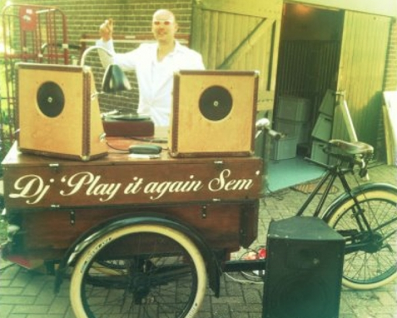

24ste ontmoeting BOB oktoberfest
20.00 - 23.30 5 oktober

Semmy Prinsen, tenorsaxofonist, bekend van Artishock en Jazz in Soest, is ook actief als DJ ‘Play it again Sem’. Met originele draaitafels uit de 40-er jaren draait hij 78 toeren platen. Deze 78 toeren platen duren nooit langer dan 3 minuten en hebben medio vorige eeuw de Jazz naar Europa gebracht. Grote namen als Billy Holliday, Charlie Parker en Louis Armstrong zijn zo voor een groot publiek toentertijd toegankelijk geworden.DJ Play it again Sem, put bij het draaien uit zijn omvangrijke platencollectie van Mainstream tot Bebop. Semmy Prinsen
Voor deze keer draait zijn broer Oscar Prinsen de beste plaatjes uit de collectie!
instituut voor de loslopende mens
VORIGE PROJECT
VOLGENDE PROJECT
BOB = Breng Ons Bier